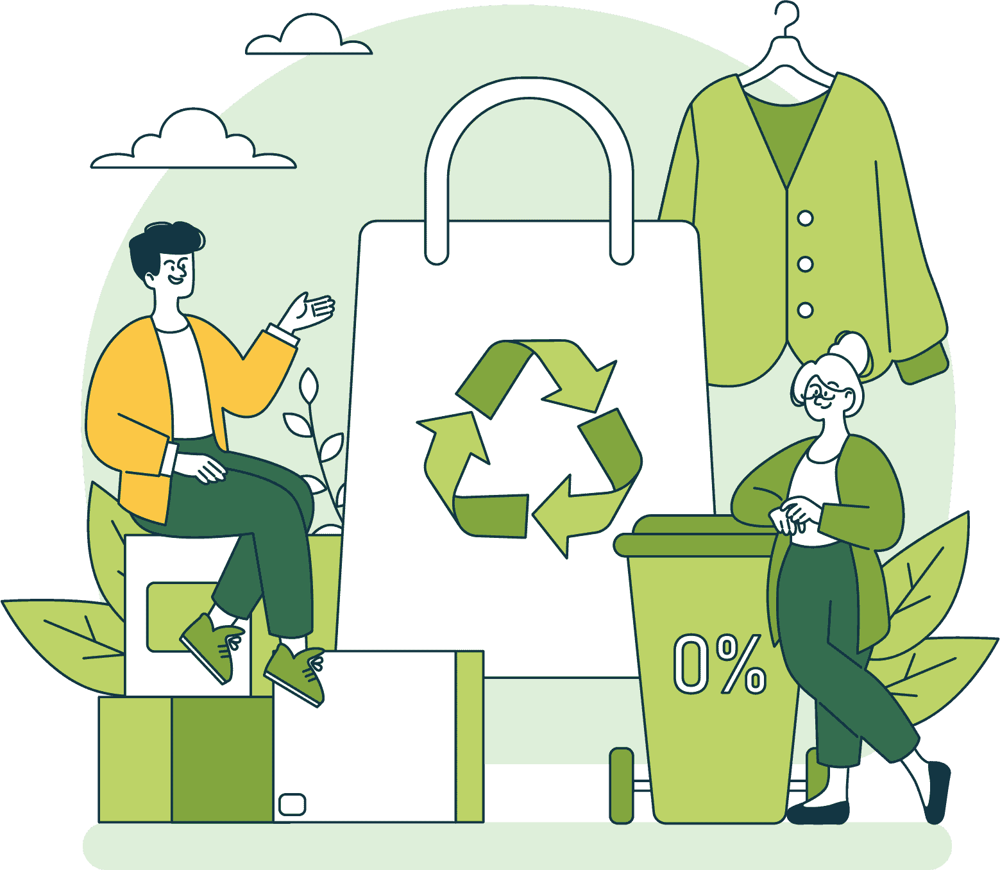

Barang bekas bisa menjadi produk berkualitas yang bermanfaat dan ramah lingkungan. 🌱

Produk ramah lingkungan tersedia di sini. Marketplace ini menghadirkan berbagai produk yang dibuat dari bahan daur ulang atau bahan lebih berkelanjutan. Dengan berbelanja di sini, kamu tidak hanya mendapatkan produk bermanfaat, tetapi juga ikut mendukung upaya pengurangan sampah dan menjaga lingkungan.